1 hour and 5 minutes. Regular classroom, exam will start at beginning of class--sharp. It is recommended you arrive early to start promptly.
If you show up late, you will not be given extra time.
Bring your calculator!!! I will do a calculator check to make sure you do not have notes hiding inside your calculator.
Closed book, closed notes, no aids of any kind besides your calc.
You will be asked to put all of your belongings in the front of the class (backpack, purse, etc). I will then assign you a seat (seating chart).
Bring your GCC/Official unexpired Picture ID with you and have that on your desk
Tip: get a good night’s sleep
Read the syllabus carefully again. There’s a section devoted to exams.
General comments on tests:
All types of test questions are fair game:
Multiple-choice (with and/or without showing work type), True/False, Fill-in the blanks, and Free Response
Expect 80-90% of the test to be similar to HW, however, I make up my own questions and some questions will be unlike the hw but use the theory and concepts we discussed in class.
How to study for the test:
Read the sections of the textbook carefully and study your class notes
Make sure you are comfortable with all the homework questions. Go back and review them. Better still: you should print out your homeworks after you finish them so you can study from them for tests.
Read the study guide carefully; make sure to know which sections and topics are covered
Take the practice exam. This is a sample test to give you an idea of what our test might look like and also so you can “test yourself” on your preparedness. Study my answer key carefully.
Material Covered (in brief)
Chapter 1:1.1, 1.2, 1.3, 1.4, 1.5, 1.6
Chapter 2:2.1, 2.2, 2.3, 2.4
Chapter 3:3.1, 3.2, 3.3, 3.4, 3.5
Miscellaneous: Rounding Rules
Material Covered
Chapter 1: Data Collection
Key terms:
Population vs Sample, survey/poll, census, sample survey
Parameter vs Statistic
Data, data set, raw data, sample data, subjects/individuals, Grouped vs Ungrouped data
Variables, Qualitative vs Quantitative variables, Discrete vs Continuous variables
Levels of measurement: nominal, ordinal, interval, ratio
Random samples, simple random samples, representative samples, convenience sampling, systematic sampling, stratified sampling, cluster sampling, voluntary response sampling
Studies: cross-sectional studies, case-control studies, cohort studies; retrospective vs prospective
Biased vs unbiased study, voluntary bias, social acceptability bias, self interest bias, leading question bias, nonresponse bias, sampling bias
Be able to identify variables as either qualitative or quantitative. For quantitative variables, be able to identify whether they are discrete or continuous
Be able to determine the level of measurement of variables
Be able to determine a population vs a sample and key terms in a study/scenario
Be able to identify types of sampling used
Be able to identify types of experimental methods
Chapter 1 Practice Test
Pg 57-58: 3, 4, 5, 6, 7,10, 17, 18, 19
Chapter 2: Organizing and Summarizing Data
Key terms:
Frequency Distribution, Relative Frequency Distribution, Cumulative Frequency Distribution,
Bar graphs vs Histograms, Pareto graphs, Pie charts, Stem-Leaf plots, Dot plots
Tables and Histograms: classes, UCL, LCL, CM (clas midpoints, CB (class boundaries), CW (class widths)
Shape of distributions: skewed left, symmetric, skewed right, uniformly distributed
Bell-shaped = symmetric = Normally distributed
Be able to construct and interpret: frequency distributions, relative frequency distributions, and cumulative frequency distributions. Both in table form and as histograms. I’ll tell you the classes or class widths.
Be able to construct and interpret: Stem-Leaf plots, Dot plots
Understand how graphs can be misleading: non-zero vertical scale, wrong “dimensions” using areas of volumes for one-dimensional data
Chapter 2 Practice Test
Pg 113-114: 1, 2, 3, 4, 7, 9
Chapter 3: Numerically Summarizing Data
Key terms:
Measures of center:
Mean: (arithmetic) mean, population mean, sample mean
Notation: vs
Interpretation: “average”
Formula: 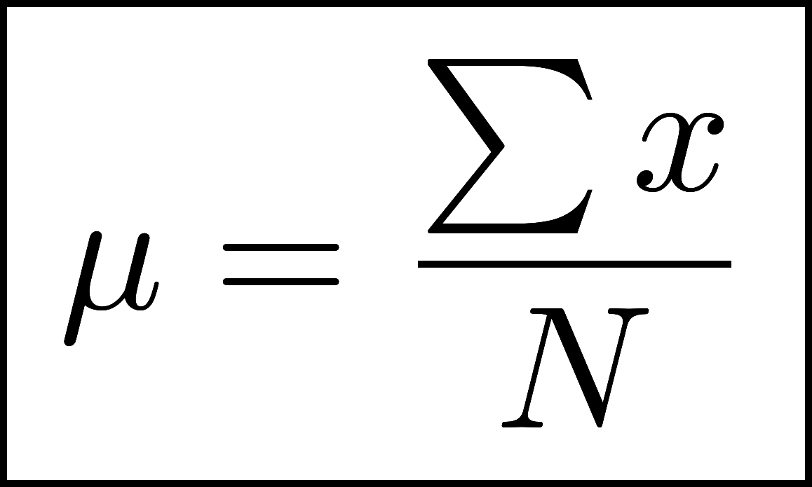 vs 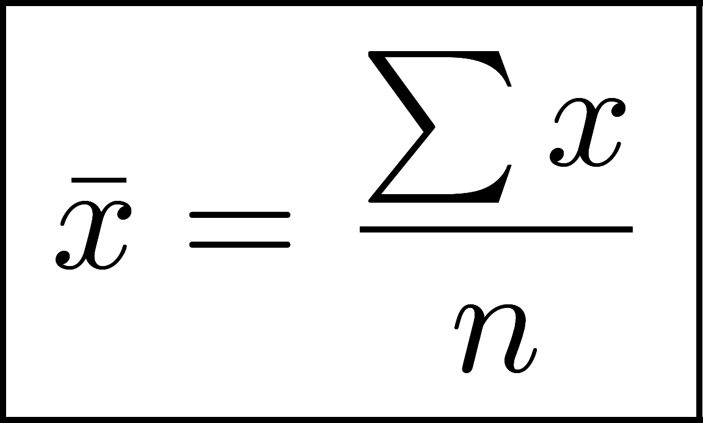
Units: ”units of x per units of n”
Median:
know how to compute by hand (odd vs even number of data) and using the calculator.
Interpretation (cuts data to 50% above/below)
Units: ”units of x”
Mode
Resistant, outliers
Dispersion/Spread:
Range
Units: ”units of x”
Standard Deviation: population standard deviation vs sample standard deviation
Notation: vs
Interpretation: how spread out the data is
Units: ”units of x”
Variance: 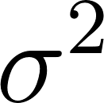 vs 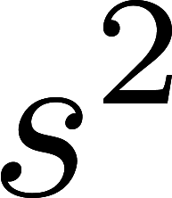
Units: ”units of x squared”
Empirical Rule: 68-95-99.5% Rule
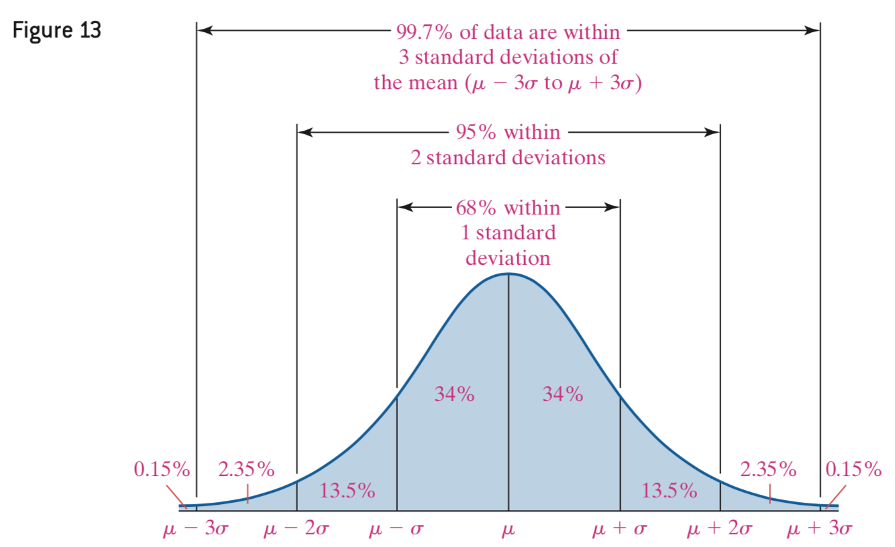
Know which measures of center are resistant (sensitive to outliers), which are used only for quantitative data, which can be used for qualitative data
Understand relationship between mean, median, mode in terms of skewness of shape of distribution (tail pushes mean)
Understand the meaning of standard deviation: by looking at histograms can you tell which distribution has smaller/larger standard deviation? Could you make a rough estimation of what the standard deviation would be (perhaps by matching)?
Know which symbols go with the concepts:
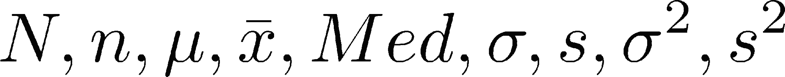
Memorize the Empirical Rule!!
Understand the meaning of the empirical rule and its connection with standard deviation.
Remember: empirical rule only applies to approximately bell-shaped distributions
Be able to identify the values in an interval based on standard deviations (ie 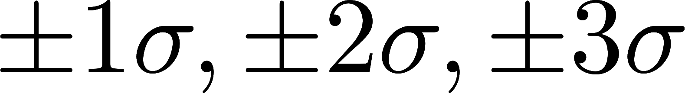)
Know the percentages given by empirical rule and answer questions based on these cut-offs
Be able to determine actual number of data in a certain range based on empirical rule
Be able to compute the mean from grouped data:
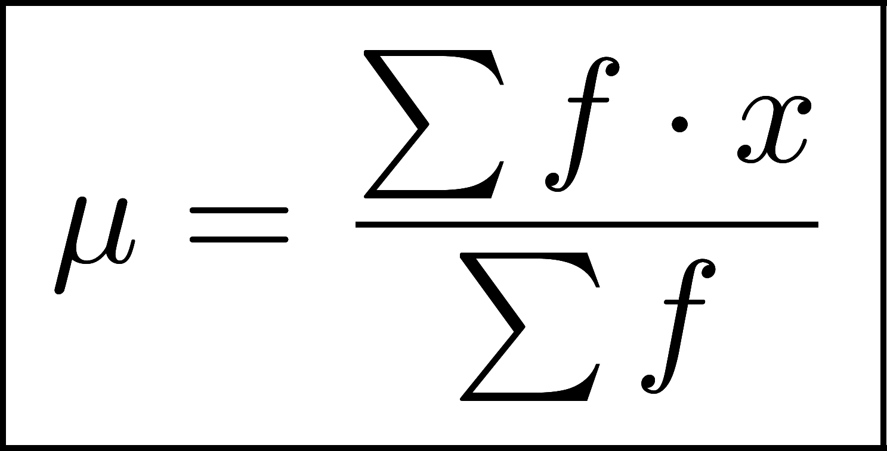 vs 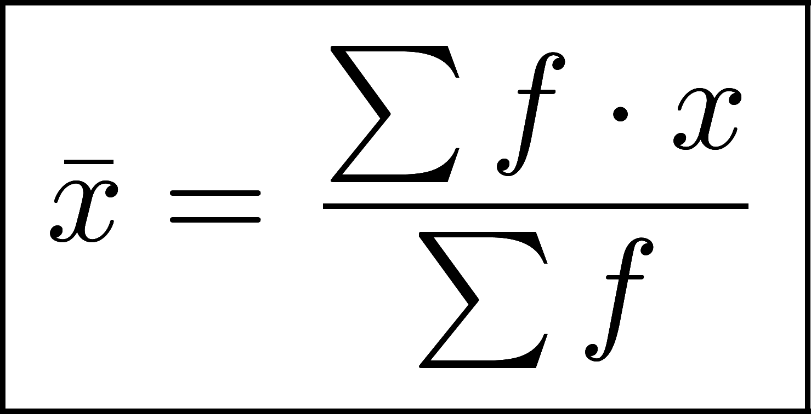
Key: we use theclass midpoints to approximate the x’s! Also: 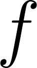 = frequency within each class
Weighted means: 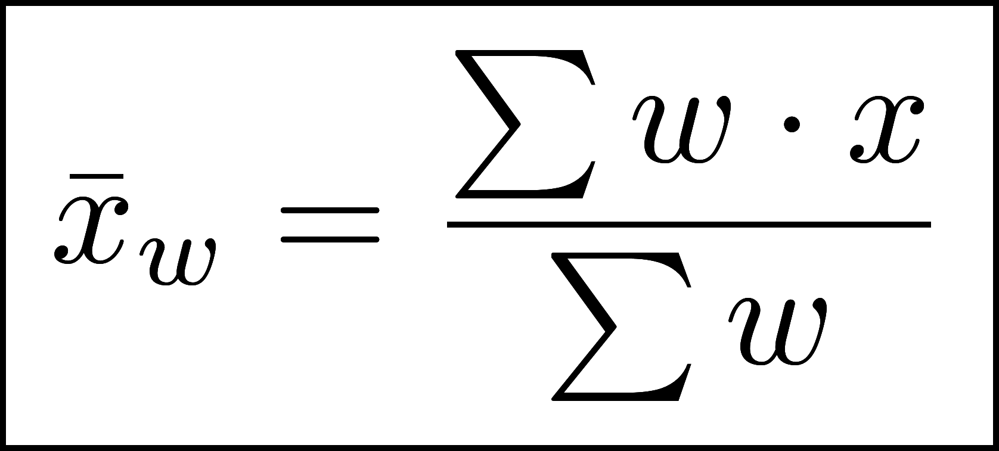
Grade-point average (GPA), weighted mean examples
Z-scores:
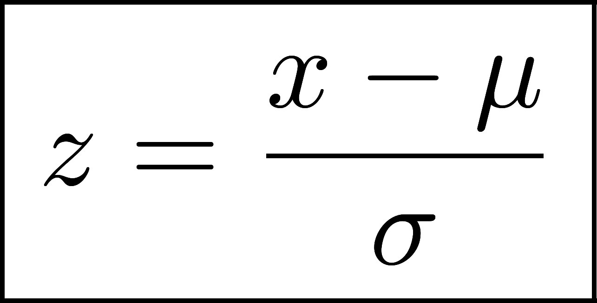 vs 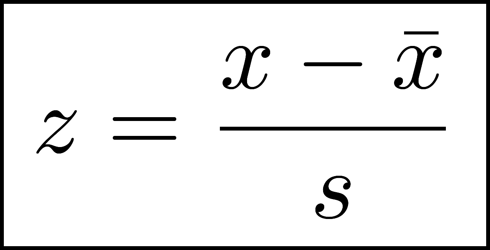
Interpretation: number of standard deviations above (or below) the mean
Why important: relative standing; normalize data sets from different groups so can compare them (eg. relative height of men vs women)
Percentiles: 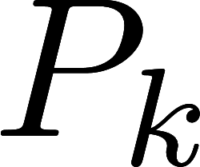 = value in data set that separates the lower percent of data. That is, percent of the data is less than or equal to .
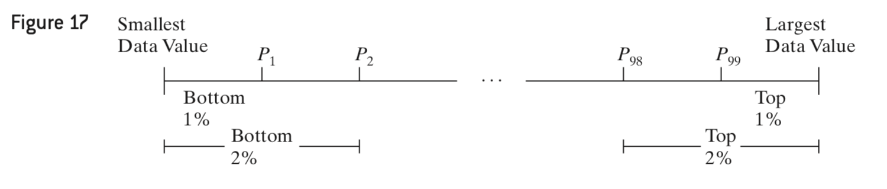
Quartiles: 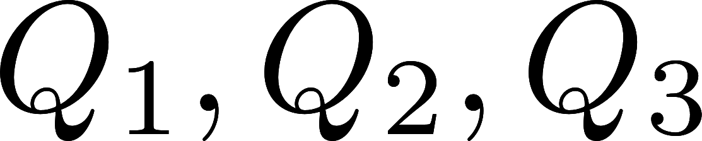
Cut-up data into four equal parts
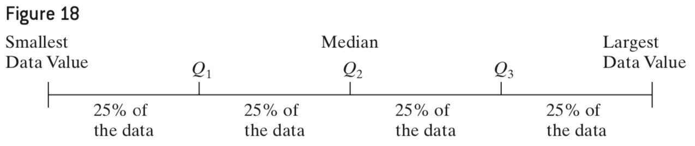
Interquartile Range: 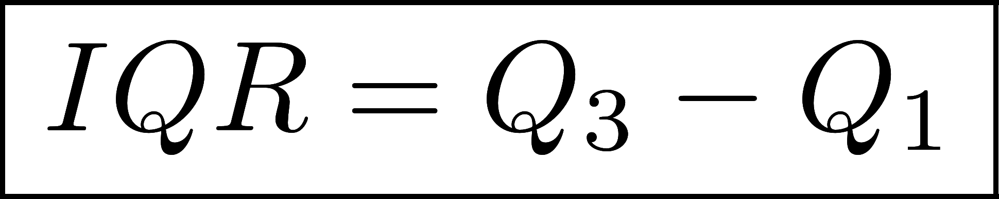
Be able to find the fences using IQR:
Lower fence: 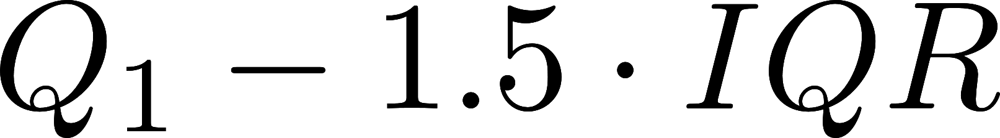
Upper fence: 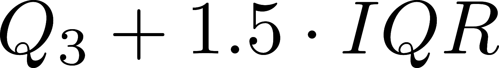
Be able to check outliers using fences and IQR
Five number summary: min, Q1, Med, Q3, max
Box-plots:
Know how to draw a box-plot by hand
IMPORTANT: scale axis accurately first, make it long enough to include min and max
Draw: box, whiskers, and identify outliers
Be able to recognize whether distribution is skewed left, skewed right, or symmetric based on box-plot
Be able to match a box-plot with a histogram
Calculator:
Know how to enter data into a list (STAT > Edit)
Know how to compute “1-Var Stats” (STAT > CALC > enter list)